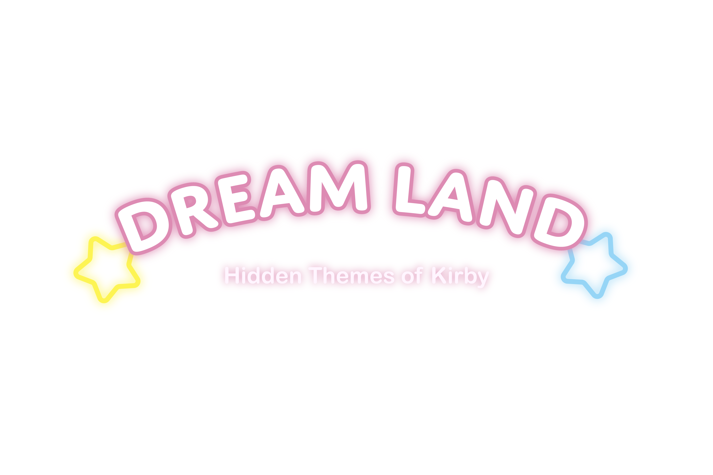
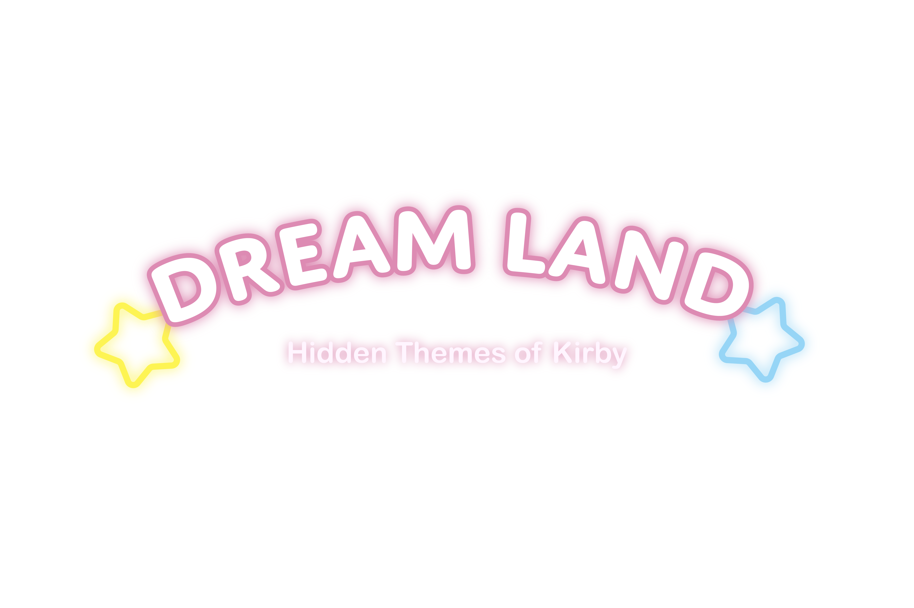

Masahiro Sakurai is known for a number of classic game series, ones deeply loved by a large number of people. The entire smash brothers series and kid icarus uprising are some standout works of his and the people at HAL laboratories he works with, but one of his most well known creations is kirby. Named after a lawyer that really helped out Nintendo early on in the company's life, Kirby is a small pink sphere who lives on the cutsie star planet Popstar, and goes on absolutely adorable adventures throughout that world and others. However, also like most works of Sakurai, Kirby isn’t only its cover facade, as woven into the series and the characters are a number of themes that can reach much darker and wilder ideas than people new to the series might guess considering the art style and overall happy and cute feelings of the games.
Kirby themselves is an incredibly powerful creature, one with humble beginnings but also one that has more than shown its ability to do major tasks. For those who don’t know, Kirby can inhale enemies in order to copy their abilities and use them for themselves. Alongside this, Kirby is also incredibly well known for making allies and friends of those around them, even turning one of their first major enemies, King Dedede, into a close friend by modern games. These powers are often needed as Kirby has gone up against literal Cosmic Horrors, Power hungry beings, and embodyments of harmful aspects.Fecto Elfilis
Kirby’s second power is one that most often ties in with the games overall themes however, themes that tie in with the cutesy aesthetic even if they do get a bit darker or deeper than other stories like those explored in the Kirby games. So much of the time, the protagonists of these games, kirby included, encounter extremely powerful or magical entities, either being influenced by something primordial or all corrupting, like president haltmann or Marx, or simply being dark cosmic forces, like Zero or Fecto Elfilis. These seemingly insurmountable forces bring great change and often negative change at that but in the end, not only is Kirby able to triumph, but the chance of redemption is nearly always possible, especially in the cases of people being corrupted by an outside force.
This is because of Kirby's friendship, and the hope that they carry along with them, being able to find the good in the hearts of even the most corrupt or evil of entities. Even if this doesn't always work, especially with more primordial forces, it still represents an extremely positive outlook in the face of insurmountable odds, and the core of Kirby themselves. Often, they can seem even more powerful than the enemies they fight, with some enemies even being implied to be the same sort of being as kirby albeit twisted. But instead of trying to take over the world with that power, they want to spread hope and comfort, all the while inspiring those around them. Even in the cases where kirby’s trust gets the better of them, or they are manipulated, like in the case of Marx, the fact that they have that hope for the future and for the goodness of the people around them is what allows them to succeed in the end, and even make friends of old enemies.